從使用者訪談到產品優化：UX 研究如何助攻《天下雜誌 App》訂戶增長
作為產品團隊中的 UI/UX 設計師，我於 2023 年負責《天下雜誌 App》的使用者訪談，將訪談中的關鍵洞察轉化為可衡量的產品機會，付費牆優化訂閱轉換率 +4%、禮物文章擴大觸及非訂戶、TTS 用戶首度超越 Podcast 用戶，協助團隊制定產品年度 Roadmap，目標達成訂戶增長 8,000 人。
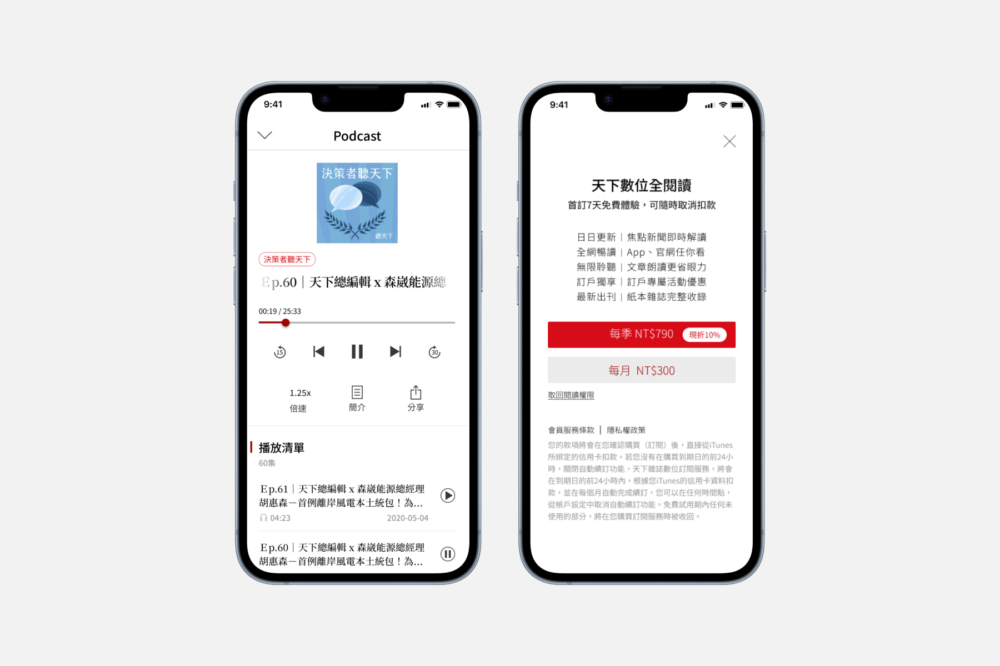
產業背景
全球媒體產業正經歷前所未有的數位轉型浪潮
全球媒體數位轉型主要受到使用者行動閱讀習慣改變，以及全球媒體訂閱制營收模式 (Paywall) 興起影響。面對這樣的趨勢，《天下雜誌》在 2015 年正式宣布開啟數位轉型，推動「平網整合」的內容政策。2017 年，推出「全閱讀」服務，正式啟動線上新聞付費模式，開創台灣媒體數位轉型的新里程碑。
2019 年，尼曼新聞實驗室提出了「紙本媒體數位轉型四大里程碑」，包括：數位營收大於紙本營收、讀者營收大於廣告營收、數位營收成長大於紙本營收衰退，以及數位訂戶數超過紙本訂戶數。這些指標不僅為媒體轉型提供了清晰的方向，也突顯了數位產品體驗的重要性。
現況與問題
《天下雜誌 App》訂戶數停滯不前
《天下雜誌 App》是天下數位產品中最成熟的指標性產品，憑藉穩定的高品質內容與報導，累積一群高黏著度的忠實讀者。2022 年底，訂戶數出現明顯的停滯期，新客數獲取趨緩、既有訂戶的留存壓力也逐漸浮現，隨著市場需求的變化與競爭媒體的多樣性，團隊面臨如何突破成長的挑戰，究竟是什麼原因讓使用者願意付費？什麼原因讓使用者願意停留？
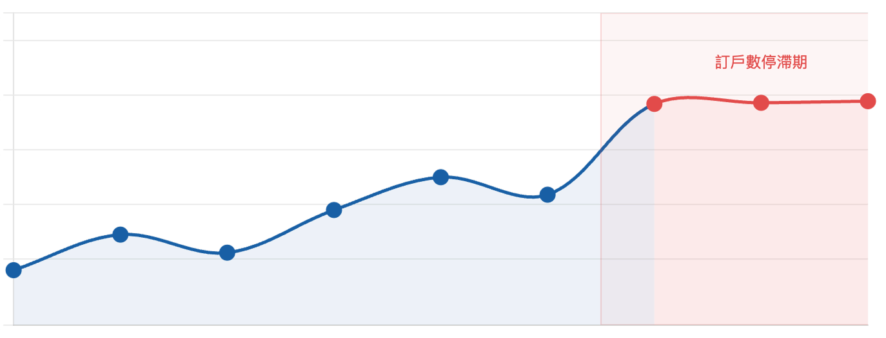
訪談計劃
了解使用者在訂閱前的最後一哩路 — 付費行為背後的真實動機
核心商業目標是在 2023 年訂戶數增長 8 千人，為了達成目標，產品團隊計劃透過深入的使用者研究與訪談，了解「付費」與「不付費」之間的關鍵決策差異，並探索現有產品功能是否滿足用戶需求，這些研究結果將作為制定產品年度 Roadmap 的重要依據之一。我們在為期 3 週的時間內，完成了 10 名使用者的訪談，我負責撰寫主要訪綱，並擔任 3 場訪談的主訪者與 4 場訪談的紀錄者。
訪談目的
了解使用者在決定訂閱前的動機與行為、付費與不付費的關鍵因素
現有產品功能是否符合使用者的需求，找出可以改善的地方，並提高用戶滿意度
訪談方法
訪談現場
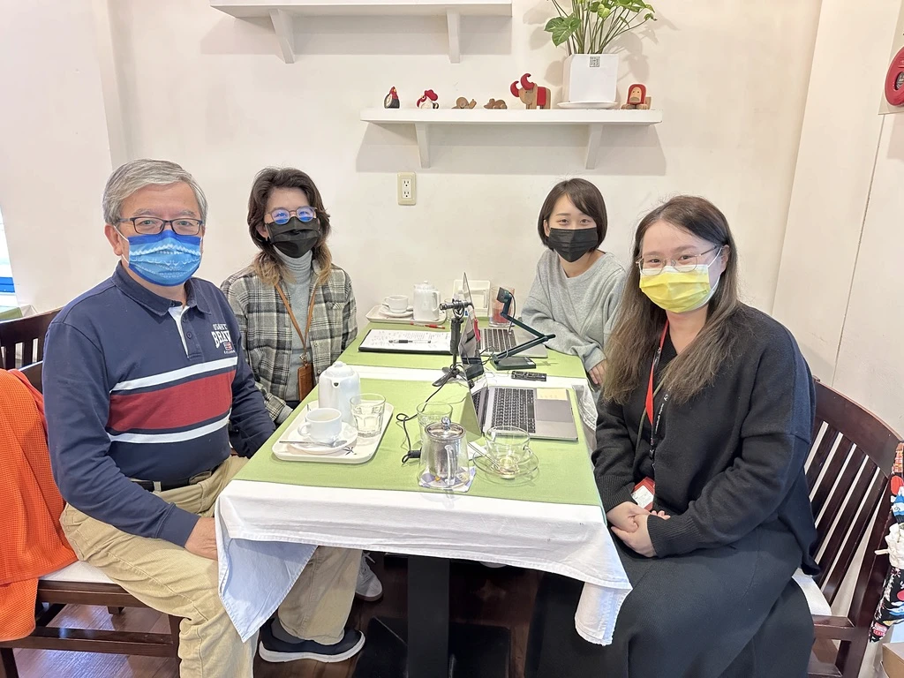
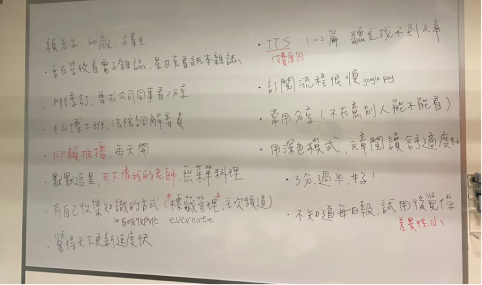
困難與挑戰
難以找到最理想的訪談對象
我們最初將目標受訪者分為 5 個群體，期望涵蓋完整的使用者生命週期，包含首購族、忠誠客、斷訂戶、恢訂戶跟免費仔。但在實際招募過程中，我們發現斷訂戶與恢訂戶的招募難度遠超預期，這些使用者對產品已失去關注，參與意願極低，即便多次接觸也難以成功邀約。
經過團隊討論，我們做出了策略性調整，將受訪對象重新定義，排除斷訂戶與恢訂戶，同時新增新忠誠客作為新的訪談對象，可以更完整地捕捉訂閱留存的關鍵點。
使用者輪廓
從免費用戶到忠實訂戶的使用者輪廓
透過深度使用者訪談，我們將讀者群體歸納為四個主要類型，描繪出從免費用戶到長期訂戶的完整輪廓。這些類型反映出不同階段讀者的核心需求與行為特徵，也成為後續設計決策的重要依據。
關鍵洞察
品牌認同與產品體驗的斷層
透過訪談我們發現《天下雜誌》在讀者心中扮演著集專業性與社交價值於一身的媒體角色。使用者普遍認同天下的品牌形象及高品質內容，也願意透過訂閱付費支持，但同時也發現使用者有強烈的個人化需求。
使用者對《天下雜誌》保持高度信任，認為其帶給人正向積極的感覺且資訊更新速度快、可信度高。
使用者認為《天下雜誌》提供的內容能讓他們在社交場合中更具話題性，講話時能言之有物。
認同內容訂閱制，願意為高品質內容付費，但不清楚自己成為訂戶後的具體權益，形成了一個關鍵的轉換障礙。
使用者看到「訂戶限定」會很有尊榮感，認為自己享有特殊權益，且樂於分享給他人。
《天下雜誌》的文章資訊量大，使用者偏好只看自己感興趣的內容，對於不感興趣的內容則會選擇忽略。
對於 App 內功能使用的差異化大，會用的人很依賴，不用的人則完全忽略，例如：TTS、推播、分享。
行為分析框架
以「鉤癮模型」分析付費與留存循環
我們將訪談中獲得的洞察逐一填入鉤癮模型的四個環節，藉此找出影響訂閱轉換與留存的機會點。從最初的外在工作需求到培養自主學習的內在動力，再到尊榮會員體驗與多元化的獎勵機制，形成了一個完整的使用者循環。這個正向循環不僅強化了使用者對品牌的黏著度，更轉化為持續性的閱讀習慣和自我提升動力。透過這個分析框架，我們可以更清楚地知道如何為產品優化提供明確方向。
習慣循環的核心：透過持續的 觸發 → 行動 → 獎賞 → 投入，建立正向的長期循環，讓訂閱成為自然且有價值的選擇。
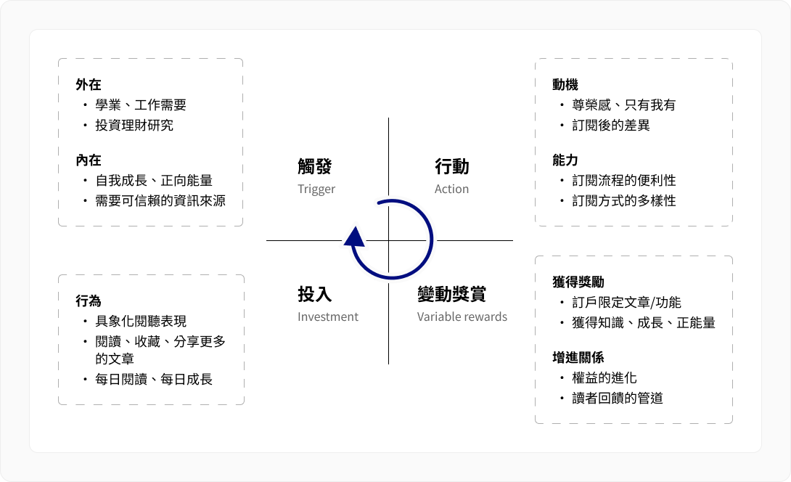
假設
基於以上洞察與行為分析，我們對影響訂閱轉換的關鍵因素提出了以下假設：
透過優化訂閱旅程與核心功能體驗，降低付費門檻、強化訂戶尊榮感，進而帶動訂戶增長與留存
設計解方
將洞察轉化為可落地的三大產品設計策略
基於使用者研究的洞察，團隊並未急著提出大量新功能，而是回到「哪些體驗最直接影響使用者對訂閱價值的認知」這個核心問題，聚焦在三個最具影響力、也最能支撐訂戶成長的優化方向。產品團隊根據我們提出的三大優化方向，排定了具體的開發優先序，並在後續的季度迭代中逐步實現。
1. 說清楚價值：貫穿旅程的權益溝通
我們發現「權益認知模糊」是導致潛在用戶猶豫與現有訂戶流失的主因，設計上不應只在付費牆（Paywall）出現權益說明，而應貫穿整個用戶旅程，從內容瀏覽、功能使用，到訂閱完成後的 Onboarding，每個接觸點都是可以強調訂閱價值的機會。
付費牆與訂閱流程優化
(1) 釐清權益邏輯：原有的權益設計對不同身份的使用者來說規則複雜、邊界模糊，我先完整盤點七種使用者身份的現有權益，找出不一致的地方，再針對「免費使用空間、訂戶限定功能、試用邏輯」三個方向重新整理，讓每個身份的權益區分更清楚且可對外溝通。
(2) 優化訂閱流程：我梳理了從訪客到訂戶的完整路徑，找出各個身份在哪個節點遇到付費牆、哪些步驟造成猶豫，再重新規劃各身份的訂閱動線，讓轉換路徑更順暢。
(3) 調整付費牆介面設計：舊版的設計要求使用者先選方案、再按訂閱按鈕，多了一個決策步驟。新版將推薦方案與訂閱按鈕直接結合，預設選中推薦方案，使用者只需確認一次即可完成訂閱，降低了付費門檻。
| 限會員 | 限訂戶 | 限訂戶 | 限會員 | ||
|---|---|---|---|---|---|
| 文章閱讀 | podcast | TTS | 深色模式 | 收藏文章 | |
| 訪客 | 每月免費 1 篇 | X | X | X | X |
| 新會員 | X | V | X | X | V |
| 是會員新訂戶 | 免費 7 天 | 免費 7 天 | 免費 7 天 | V | V |
| 非會員新訂戶 | 免費 7 天 | 免費 7 天 | 免費 7 天 | V | X |
| 是會員非訂戶 | 每月免費 2 篇 | V | X | X | V |
| 是會員是訂戶 | V | V | V | V | V |
| 非會員是訂戶 | V | X | X | V | X |
| 限會員 | 限訂戶 | 限會員 | |||
|---|---|---|---|---|---|
| 文章閱讀 | podcast | TTS | 深色模式 | 收藏文章 | |
| 訪客 | 免費 2 篇 | X | X | X | X |
| 新會員 | 暢讀 72 小時 | 暢聽 72 小時 | 暢聽 72 小時 | X | V |
| 是會員新訂戶 | 免費 14 天 | 免費 14 天 | 免費 14 天 | V | V |
| 非會員新訂戶 | 免費 7 天 | X | X | V | X |
| 是會員非訂戶 | 每月 +2 篇 | V | 今日頁的 | X | V |
| 是會員是訂戶 | V | V | V | V | V |
| 非會員是訂戶 | V | X | X | V | X |
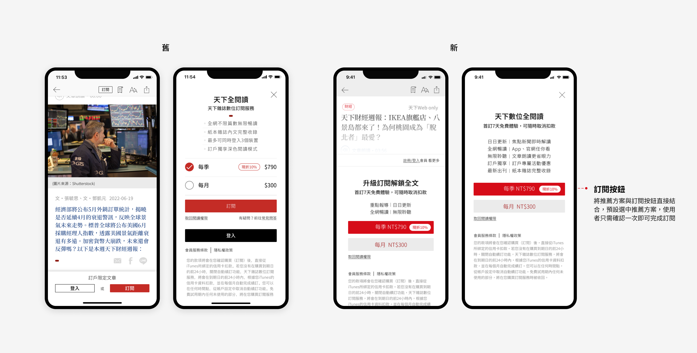
禮物文章分享
我們發現訂戶有強烈的主動分享行為，他們願意把好文章推薦給身邊的人，但現有的分享機制無法突破付費牆，非訂戶收到連結後仍然看不到完整內容，分享的價值因此大打折扣。我們改變了分享文章的規則，讓訂戶的分享行為變得有意義。每位訂戶每月有 10 篇無牆分享額度，收到連結的人在 14 天內可直接閱讀完整文章，不受付費牆限制，也不計入自己的免費閱讀篇數。
不但強化訂戶的尊榮感與專屬感，訂戶手上握有「送出好內容」的能力，這本身就是一種有形的訂閱價值，也讓訂戶自然成為品牌的口碑擴散者，好內容透過熟人推薦觸及潛在新客，比任何廣告都更有說服力。
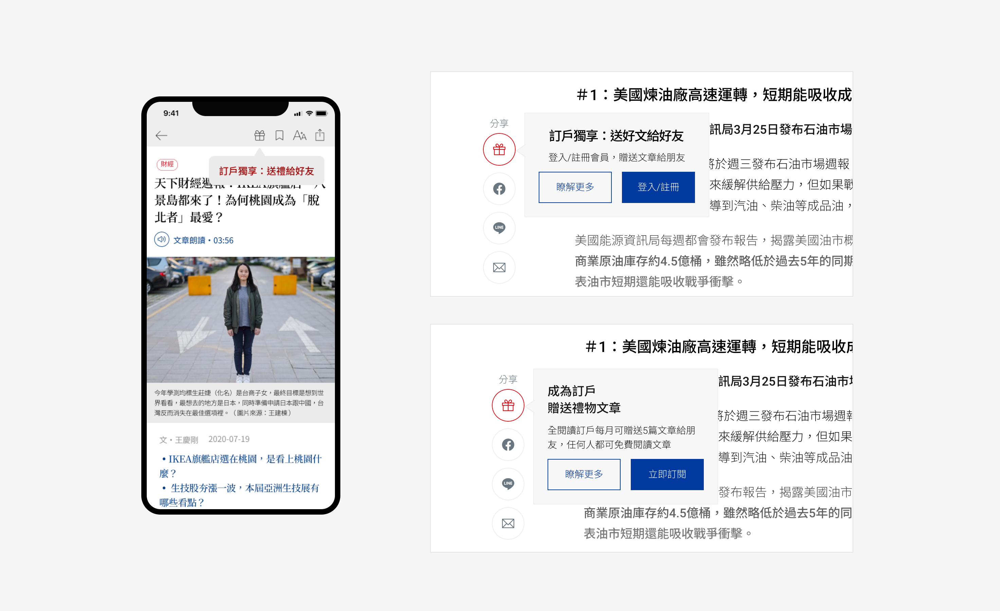
訂戶限定標籤
使用者看到「訂戶限定」四個字時，會產生一種「只有我有」的尊榮感心態，是一種身份認同層面的滿足感。
Podcast 頻道本身就有明確的分層結構：部分集數限會員收聽，部分則是訂戶才能解鎖的獨家內容，但沒有被清楚地視覺化，加上「訂戶限定」標籤之後，訂戶每次瀏覽 Podcast 頻道時都能看見自己享有的專屬權益，免費用戶則會在每次瀏覽中感受到訂閱的具體價值差異。
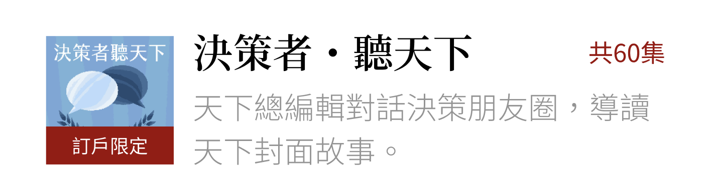
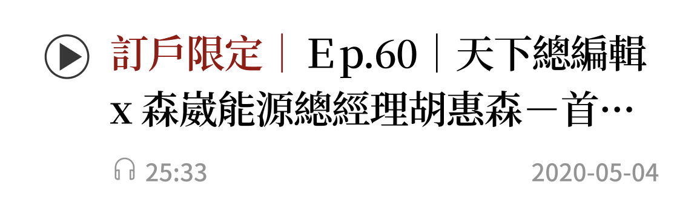
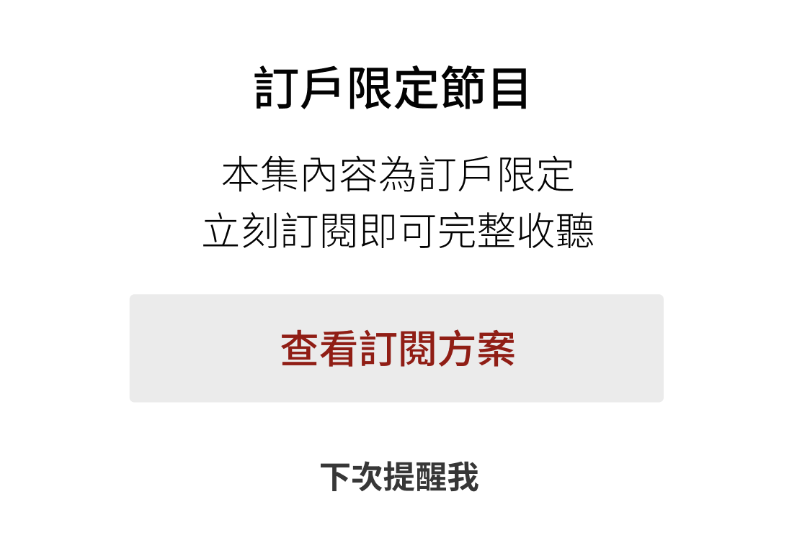
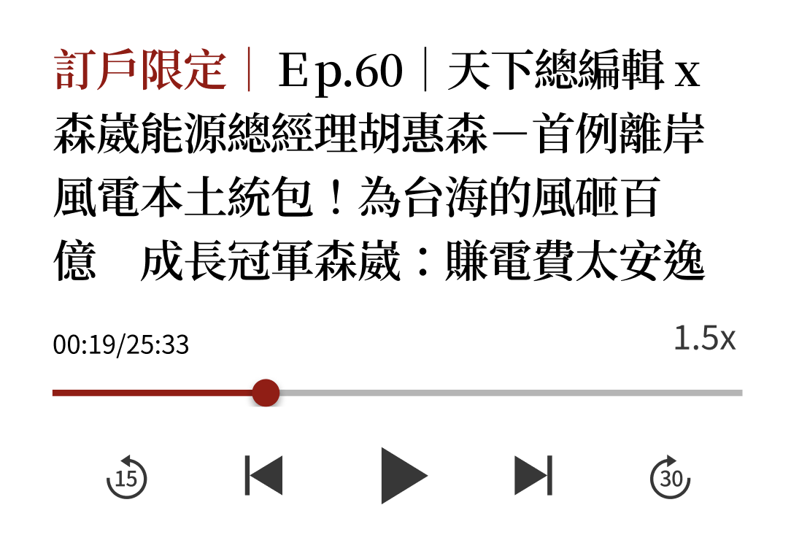
2. 數據驅動體驗：個人化內容推薦系統
《天下雜誌》的內容量與深度本身即是優勢，但資訊過量反而成為使用門檻。使用者並不追求看完所有內容，而是希望快速找到與自己高度相關的觀點與主題。
我們規劃以行為數據為基礎的個人化推薦系統，透過記錄使用者的閱讀、收藏、分享等行為，並以此為依據提供更精準的內容推薦。目標是將每一次打開 App 的體驗，從「資訊海中的被動瀏覽」轉變為「與自己高度相關的主動發現」，降低挑選文章的成本同時，也提升每次閱讀的滿意度與回訪動機。
3. 放大已被依賴的價值：優化核心功能體驗
部分核心功能對特定使用者而言是關鍵付費原因，但體驗門檻及學習成本容易讓人卻步，優化核心功能體驗讓會用的人更依賴、不會用的人願意開始用，進一步提升滿意度與留存率。
優化「聽」的體驗
TTS 語音播報功能對特定使用者而言是不可或缺的核心體驗，甚至是他們選擇持續訂閱的關鍵原因之一，尤其是時間碎片化、偏好「用聽的」吸收新知的使用者群體。這次優化聚焦在補齊使用者最期待的核心體驗，新增倍速播放、播放清單與斷點續播功能。
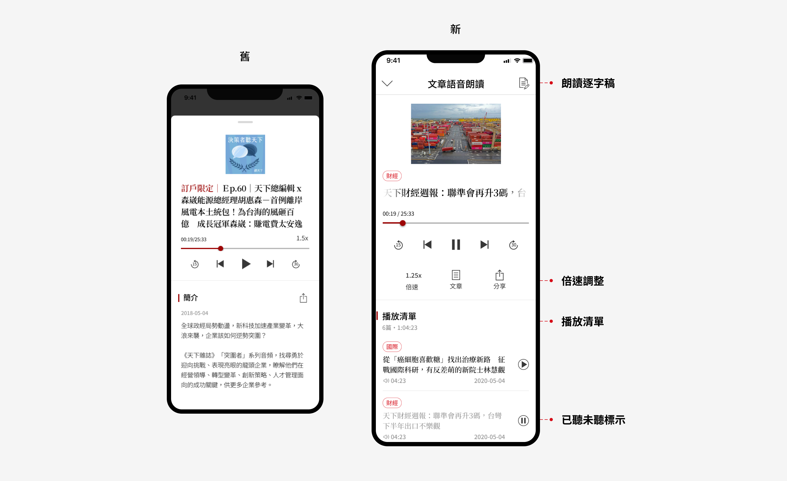
專案成果
研究洞察直接落地，多項指標達成可量化成效
訪談結束後的洞察不只停留在報告裡，而是實際轉化為付費牆優化、禮物文章、TTS 體驗升級等具體功能，並在上線後獲得了可量化的成效回饋。
付費牆優化上線一個月後 + 0 %
上線三天內 0 次
禮物文章上線三天內 0 位
Podcast 使用人數 達成
學習與反思
傾聽真實的聲音，找到設計的方向
在訪談中聽他們說起每天通勤時用 App 聽新聞的習慣、說起看到某篇文章突然決定訂閱的瞬間，也聽到他們對我設計的介面提出直接的批評，面對面交流的真實感，是任何數據報告都無法取代的，這也是我喜歡做 2C 產品的原因，不只是因為設計的東西會被很多人用，也因為使用者的回饋是如此直接，才能讓設計師清楚知道自己的決策是否真的有意義。
另一個深刻的收穫，是看見研究成果被真正採納，訪談結束後的洞察不只是停留在報告裡，而是實際轉化為付費牆優化、禮物文章、TTS 體驗升級等具體功能，並在上線後獲得了可量化的成效回饋，讓我理解了什麼叫做「設計決策有所依據」，也讓我對 UX 研究在產品團隊中的角色有了更清晰的認識。
唯一遺憾的是，我在當年度年中離職，沒能親眼看到年底的訂戶數是否達成 8,000 人的目標，但能在有限的時間內完成一個有完整流程的研究專案，並親眼見證設計落地、數據回升，已經是很完整的一段經歷。
yuhsuanwang531@gmail.com